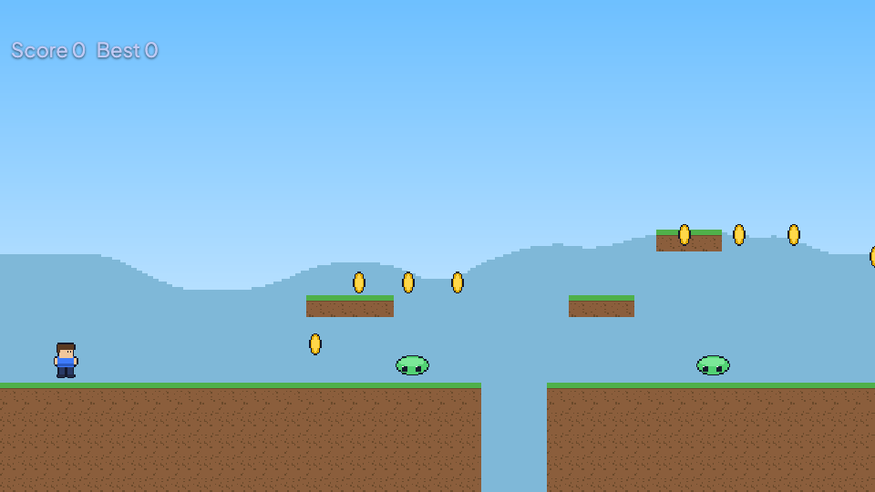

T31 Full game workshop — Coin Canyon (2D)
Build Coin Canyon, a short side-scrolling challenge: cross three gaps, collect coins, activate flags and defeat the giant slime. This is a complete workshop using Nord's existing Platformer game. You will understand and change the actual project, rather than assemble a scene that only looks like a game.
Allow: 60–90 minutes. You need: Nord Editor, a keyboard, and a writable project folder. The terminal route uses the engine's nord executable (from a checkout, target/debug/nord). All libraries and art are already bundled. No download or account is needed. The game is keyboard controlled; this workshop does not add mobile buttons.
1. Make your own project#
In the welcome screen choose New project, select Platformer, and create a folder named coin-canyon. Open that project. Use a new project so your changes belong to you and the bundled example stays available as a reference.
The terminal equivalent, from a folder where you keep projects:
Terminal (in the folder that contains your project folder):
nord new coin-canyon -t platformer
nord serve coin-canyonOpen the local address printed by serve. Keep that process running during browser testing; Ctrl+C stops it. Editor users can use the editor's Play button instead.
The files you will use are:
| File | Purpose |
|---|---|
nord.project.json |
Project name, display, physics and start scene |
scenes/main.scene.json |
Hero, coins, slimes, flags, camera and systems |
assets/maps/level.tilemap.json |
The solid terrain grid |
scripts/platformer2d.js |
Reusable movement controller |
scripts/enemy.js and scripts/boss.js |
Stomp/contact rules and final victory |
scripts/hero-fx.js |
Movement animation and jump sound |
Save a backup of the project folder before the terrain-editing step. Inside this personal project, edit the files directly. In the engine repository, generated examples/ and templates/ instead come from tools/examples/; changes there require the generator.
2. Play the unchanged game first#
Press Play. Click the game to give it keyboard focus. A/D or arrows move, Space jumps, and Shift or K dashes. Hold Space for a higher jump; release early for a short hop. Land on a small slime from above to stomp it; side contact costs health. Flags set the respawn position. The large slime takes five stomps and ends the game when defeated.
Go as far as the first flag. Notice how the camera follows Hero, and how coins disappear while the score rises. Stop Play before editing; runtime changes are temporary.
Checkpoint: you can move, jump, collect a coin and see the hearts. If input does nothing, click the game again. If you see an error, inspect Console before continuing.

3. Understand one working character#
Open scenes/main.scene.json and select Hero in Hierarchy. Its name is Hero, not Player. Its player tag identifies it to enemies and checkpoints. The animated sprite supplies artwork; the dynamic rigidbody and collider provide contact; scripts provide movement, health and animation.
In Hero's movement script attributes, change speed from 130 to 150 and jumpForce from 340 to 380. Keep dash enabled and dashSpeed at 280. Save the scene, Play, and compare the first gap with your baseline. Stop and reduce speed if you overshoot.
These numbers can also be edited in the Hero entry's scripts array in JSON. Change the attributes of the existing scripts/platformer2d.js entry; do not replace the entire entity or add a second movement script.
Why this changes the game: gravity is 900 pixels per second squared. A stronger jump gives more time in the air, and more horizontal speed gives more range. Change one value at a time after this first comparison. A dash should be an optional shortcut before it becomes a required skill.
Checkpoint: the hero reaches the first landing without a dash, and a short tap still produces a visibly smaller jump than a held press.
4. Build a readable coin trail#
Select Coin0. Its pickup script awards 10 points. Its trigger detects contact without blocking the hero. Duplicate it with Cmd/Ctrl+D, rename the copy CoinTutorial, and set its position to [198, 240, 1]. This puts an early reward before the first elevated platform. Save and Play. Collect it and confirm the score increases by ten.
Use the existing coins to show the route rather than scattering new ones randomly. For example, move Coin1 to [238, 200, 1] and Coin2 to [270, 200, 1]. In 2D, smaller Y is higher on screen. Test that both are reachable from the platform near them.
For a deliberate bonus, change only CoinTutorial's pickup value to 50. Keep its kind as score and keep its rigidbody static and collider a trigger. A decorative coin with no pickup script will never award points.
Checkpoint: each coin disappears once and awards its configured value. Stop/Play resets the run and restores collected coins.
5. Change the actual terrain#
The original Platformer uses a tilemap, not a .level2d.json authoring file. Open assets/maps/level.tilemap.json in the code editor. Its first layer has a data array with 23 rows and 100 columns. Tiles are 16×16 pixels. -1 means empty; tile 0 and tile 3 are solid.
The main walking surface is row 18. The first gap occupies columns 22, 23 and 24. For an easier introductory jump, replace the -1 at row 18, column 22 with 0, leaving columns 23 and 24 empty. Array indices start at zero: row 18 is the nineteenth row, column 22 the twenty-third entry. Keep the array rectangular and preserve commas and brackets.
A safer way to make that exact edit, if you use the terminal, is to run this from inside your new project folder:
Terminal (inside your new project folder):
node --input-type=module <<'JS'
import fs from 'node:fs';
const file = 'assets/maps/level.tilemap.json';
const map = JSON.parse(fs.readFileSync(file, 'utf8'));
map.layers[0].data[18][22] = 0;
fs.writeFileSync(file, JSON.stringify(map, null, 2) + '\n');
JSSave and restart Play. The lip of the first gap now extends one tile farther right. Do not fill every gap: the interesting choice is when to jump and when to dash. Avoid painting terrain over the hero, flags or slime spawn positions.
Checkpoint: the gap is visibly narrower and the hero lands on the new tile. If the whole map vanishes, restore the backup and check the JSON syntax.
6. Teach an enemy, then build the finale#
Select the first Slime. Its patrol script starts with speed 35 and distance 90. Lower speed to 25 to make the first encounter readable. Keep its enemy script attached. Save and test two approaches: a descending jump should stomp it; walking into its side should remove health.
Select Boss near the far end. Its scale is twice that of a normal slime. In scripts/boss.js attributes set hp to 3 and damage to 1 for your first complete run. This is the same boss with a gentler learning curve. Later restore five HP for the challenge version.
Read scripts/enemy.js: contact checks whether the hero is above the enemy and falling. A stomp bounces the hero; a side collision emits damage. boss.js reuses those rules and emits game:win when the last hit lands. Keep one boss so the finale remains unambiguous.
Do not put the boss at a cliff edge. Leave a flat approach with space to jump, miss, recover and try again. Keep the final flag before the encounter so failure repeats the interesting part, not the entire course.
Checkpoint: a clean stomp removes an ordinary slime; three clean stomps defeat your edited boss and display victory. Contact invulnerability prevents health disappearing every frame, but it does not make side contact safe.
7. Make a complete difficulty curve#
Play from the beginning without editing during the run. Your first stretch should teach movement and one easy coin. The next stretch should require a normal jump. A flag should appear before the harder route; the boss should test a skill already taught by small slimes.
Use this acceptance list before calling the level finished:
- A new player can see safe ground from the spawn and reach the first coin.
- Every mandatory gap has a reliable landing, including without perfect timing.
- A flag activates before the boss; falling returns you to a usable position.
- Coins award points, side contact hurts, stomps work, and boss defeat wins.
- Stop/Play starts a fresh game, with no errors in Console.
Ask a friend to play without explaining every jump. If they repeatedly fail at the same landing, widen it or move the preceding coin trail. Add difficulty through combinations of learned actions rather than hidden collision surprises.
8. Export and test the delivered game#
Save all files. In Project → Export…, choose the normal web folder export and an output folder. The terminal equivalent is:
Terminal (in the folder that contains your project folder):
nord check coin-canyon
nord build coin-canyon --out coin-canyon-web --zip
python3 -m http.server 8000 --directory coin-canyon-webRun these commands from the parent folder containing coin-canyon. Open http://localhost:8000, click the game and repeat the first coin, a death/respawn, and the boss finale. This checks the exported copy rather than the editor server. Keep the whole output folder together. The zip can be uploaded to a browser-game host; index.html must stay at its root.
If export shows old gameplay, save the scene and rebuild into the folder you are serving. Missing art usually means a renamed path or an incomplete upload. A silent game may need a click to unlock audio. For collision problems, check the collider and solid tile IDs before changing artwork.
You now have a short game with movement, scoring, enemies, checkpoints, a boss and a tested delivery path. For a second level, duplicate your personal project first and make a new route before adding more systems.